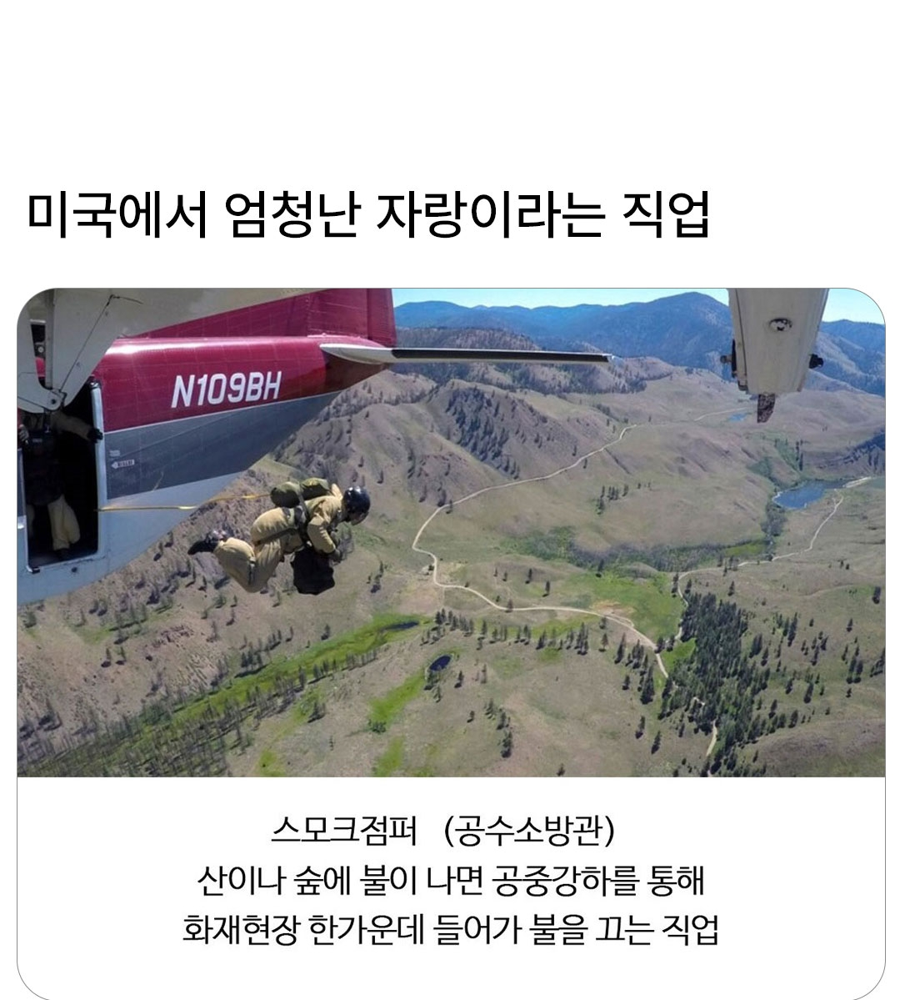
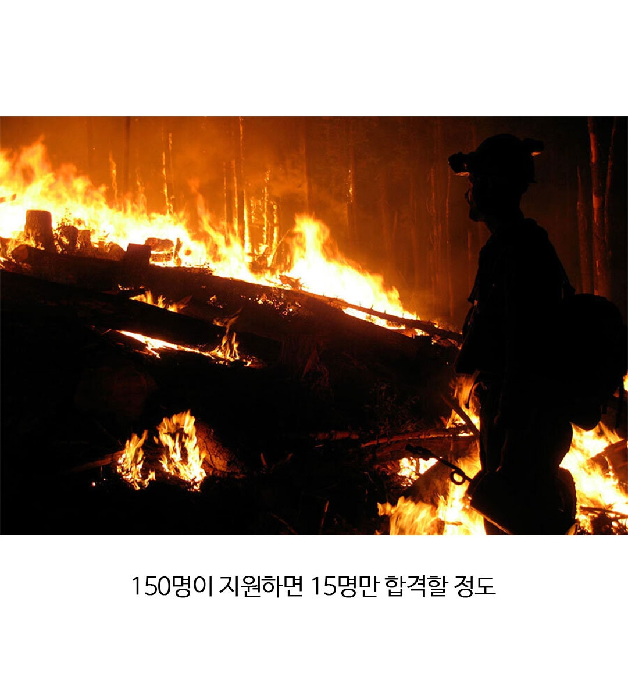
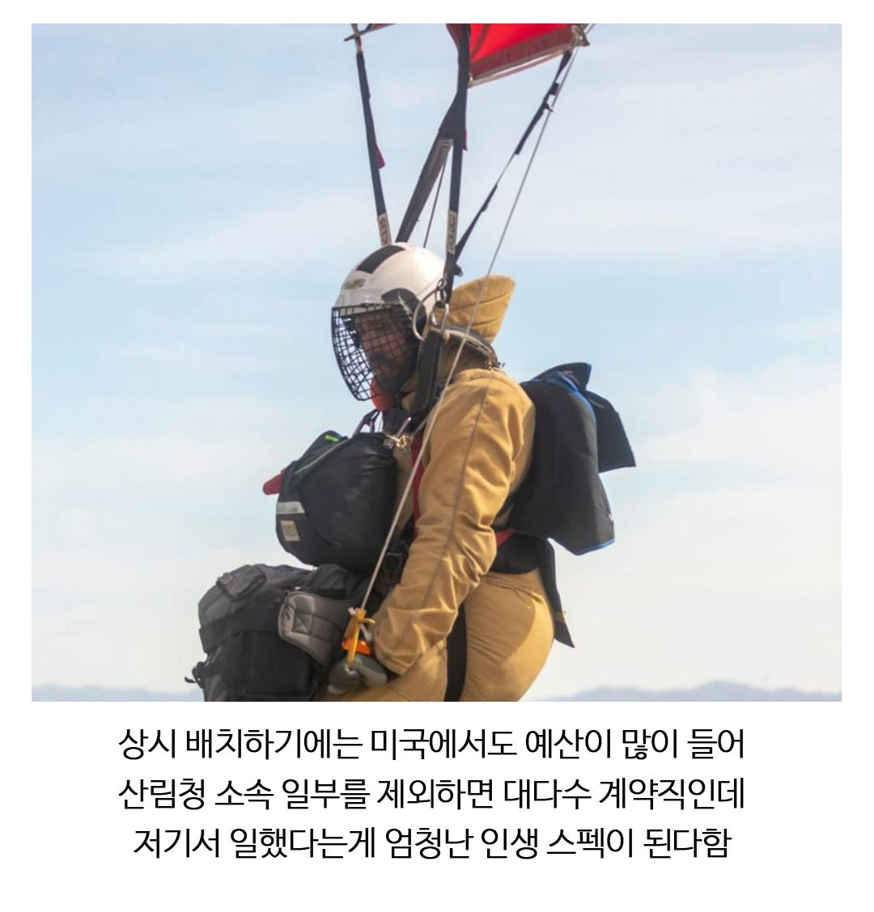
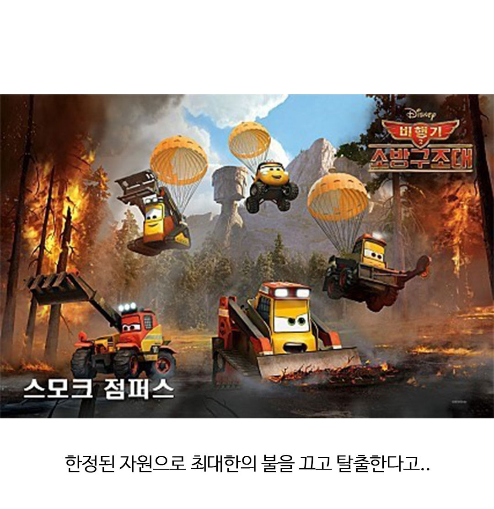
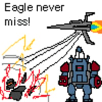
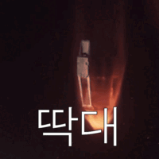

탈출 까지가 템플런임
ㄹㅇ 헬다이버즈네
트라스트젬 물 1톤 투하

*스트라타젬
이건 잘못하면 진짜 죽겠는데? 산불 한복판 공수강하는;;
산불 한복판 공수가 아니라
산불 진행방향 쪽으로 공수시켜서 방화작업 하는거 아닐까
그러더라도 일당백 수준의 체력, 완력 가져야겠지만. 어휴..
맨몸으로 뛰어들면 뭘 할수있지 물만땅 소방궤도전차라도 공중투하해쥼?
뭔가 짐이 존나 많은데 고체형 소화기나 그런 거 아닐까?
빠르게 투입해서 나무 제거 및 빙화선 구축
진짜 히어로네
공수소방관 이름 개간지네
한국에도 있음
낙하산은 아니지만 헬기타고 레펠로 다니는 공중진화대라고 있다
https://youtu.be/2R_0JRcbS_I?si=hbAWVsGgiq210Adr
와우....
방화선 구축하고 튀는 특전사들인가보네
소화미사일 같은거 개발 못하려나
소화방법 중 제거소화라고
가연물자체를 제거하는 방법임
그러므로 그냥 미사일 쏘면 됨
거대한 버섯구름이 나오는 미사일 발사하면 됨
있었음 정확히는 소화탄 근데 여기에 출처불명의 군용 화약이 들어간대서 뉴스에도 나오고 그랬어
Firefighting Missile 사실상 유도기능이 없으니 로켓이지만 실제 있음 충격파로 인화물질.제거와 함께 진화한다네요
미국 산불 규모 어마어마한데 그거 초기진압팀인가
영화도 있었는데 자존심 자부심도 엄청 쎄고
잘못떨어지면 바로 사망아냐?
아무리 용감해도 불구덩이 속을 뛰어드는게 쉬운 일이 아닐텐데 그걸 하늘에서 뛰어내려야 하니 ㄷㄷㄷㄷㄷ
우리나라는 소방관 랜덤으로 10명 차출하면 8명은 공수강하 가능할거임. 특전사 전역하고 소방관 되는 경우가 많아서..
소방 별명이 제15공수특전여단일 정도임ㅋㅋ
수상하게 특수전을 잘하는 소방관들
ㅁㅊ 그러네ㅋㅋㅋㅋㅋㅋ
전시에 바로 전투부대 전환
뭐냐 진짜 헬다이버즈인데 ㅋ

탈출은 어케해 삐끗하면 죽겠는디